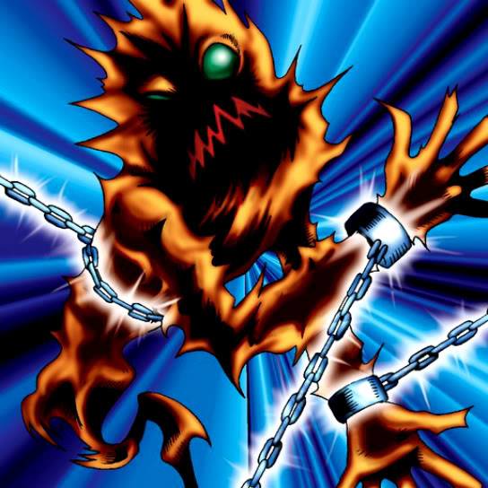

Mystical Capture Chain

Description: "While this card is face-up in the defense position, spellbinds all FIEND monsters."
STATS
ATK: 700
DEF: 700DECK COST
Deck Cost per Card: 19EFFECT NOT IMPLEMENTED
Fusion List (2 Possible Fusions)
- Mystical Capture Chain + Dancing Elf = Mystical Elf
- Mystical Capture Chain + Fairy's Gift = Dark Witch